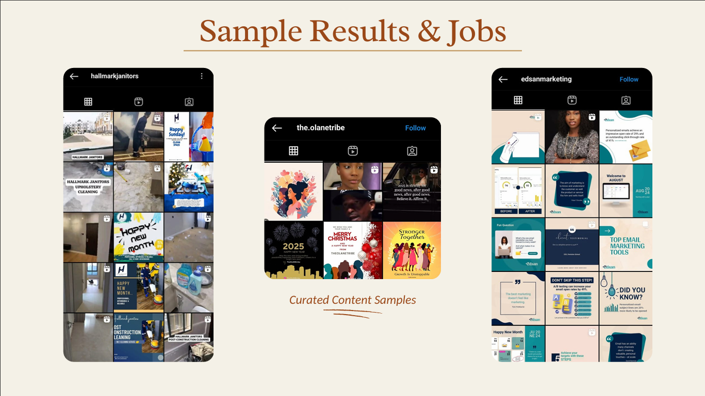

01
THEWORDDAILY · COMMUNITY GROWTH
Growth without shouting into the void.
Identified and engaged people in the Christian and motivation space, managed comments and DMs, and wrote hooks designed for genuine conversation.
The result
8,500% audience growth in 30 days through steady, human interaction.
The lesson
The best growth tactic was not louder content. It was better listening.
